땅을 가르치던 사람이,
이제 농지 곁에 섭니다.
토지·경매를 강의실과 방송에서 설명해 온 이주왕 대표가 직접 상담합니다.
- 15곳대학·기관·교육기업 출강
- 10편SBS Biz 「하우머니」 출연
- 2권토지·경매 저서

걸어온 길
- 2004농업회사법인 설립주식회사 비전글로벌
- 2013공법경매 교육서울신문 인터뷰
- 2018서울사이버대 강좌부동산공법경매
- 2020~23메가랜드·에듀윌부동산경매 강의
- 2024SBS Biz 「하우머니」농지·토지 경매 해설
- 2026올바른농지농지 전수조사 대응
각 항목은 법인 등기와 보도·방송·강의 자료로 확인한 것입니다. 자료 보기 →
하는 일은 분명하게,
하지 않는 일은 더 분명하게.
하는 일
- 농지진단땅의 상태와 행정단계 확인
- 영농설계무엇을, 언제, 어떻게 심을지
- 경작 동반작업 지원과 일자·사진 기록
- 전문가 연계행정사·변호사·세무사 (별도 계약)
하지 않는 일
- 대리경작 · 허위경작형식적인 식재 포함
- 결과 보장처분명령 취소·이행강제금 면제
- 판매·수수료묘목·장비 판매, 소개 수수료
- 학원 수강 권유KOK 학원과는 별개 사업
- 1농사를 대신 짓지 않습니다.
- 2농지법 조문과 농식품부 지침으로 설명합니다.
- 3필요 없으면 필요 없다고 말씀드립니다.
강의실과 방송에서
토지를 이야기해 왔습니다.
강의 · 출강 이력
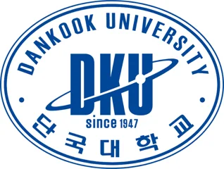
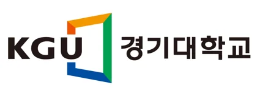
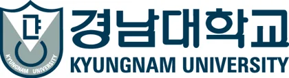
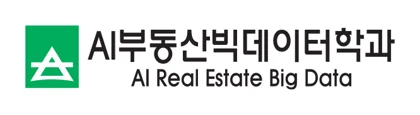
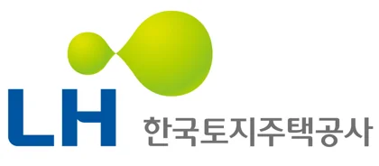
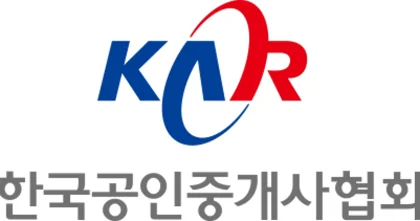
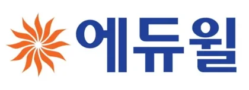
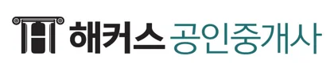
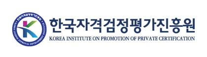
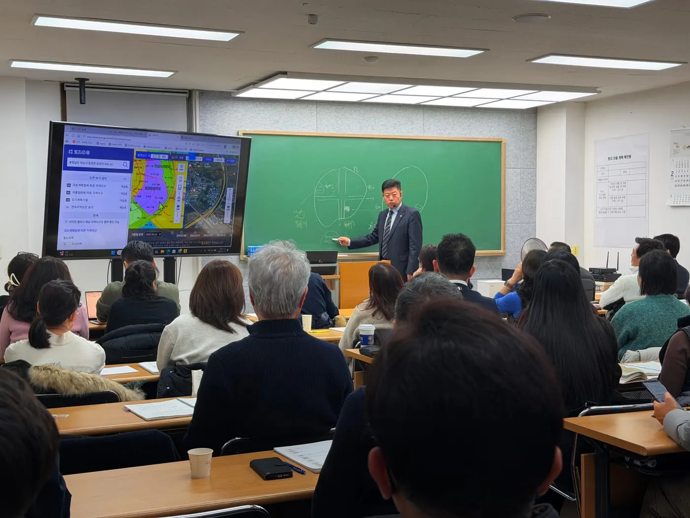
저서
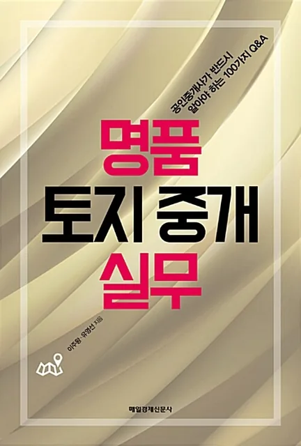
명품 토지 중개 실무이주왕 · 유영선 지음 · 매일경제신문사
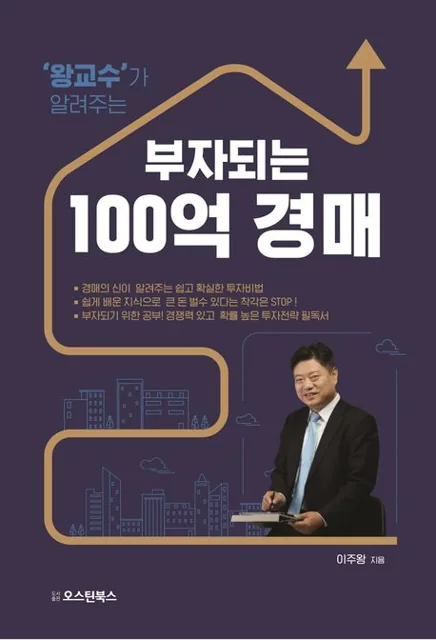
'왕교수'가 알려주는 부자되는 100억 경매이주왕 지음 · 오스틴북스
출강 로고는 제휴가 아닌 강의 이력입니다.
방송과 강의로
직접 확인해 보세요.
SBS Biz 「머니쇼 하우머니」 출연 10편과 기사, 강의 영상을 모았습니다. 썸네일을 누르면 이 자리에서 재생됩니다.
방송 출연 · SBS Biz 하우머니
강의 영상
기사


영상·기사의 저작권은 각 방송사·언론사·채널에 있으며, 원문 링크 안내 목적으로만 표시합니다. 방송 자막의 직함(서울사이버대학교 부동산학과 겸임교수)은 방송 당시 기준입니다.
회사 개요
- 상호농업회사법인 주식회사 비전글로벌브랜드: 올바른농지 · 대표이사 이주왕
- 사업자등록번호140-81-01121법인 설립 2004년
- 소재지경기도 안양시 동안구 관악대로 486, 3층 (관양동, 덕진빌딩)네이버 지도에서 보기 → · 방문 상담은 예약제
- 상담카카오톡 채널 · [상담전화]대응 지역 전국
이야기는
채널에서 이어가요.
농지 위치와 지금 상황을 편하게 남겨 주세요. 대표가 직접 확인하고 연락드립니다. 첫 상담은 무료이며, 비용은 범위를 확인하고 동의하신 뒤에만 발생합니다.
- 카카오톡 채널올바른농지 채널에서 상담하기
- 전화 상담 · 평일 09:00 ~ 18:00[상담전화]